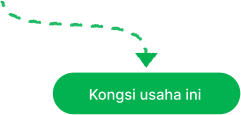
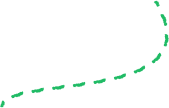
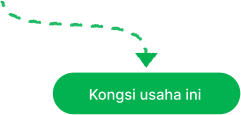
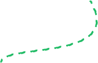

Tukar duit syiling anda kepada perubahan besar untuk bumi
Inilah yang berlaku
apabila anda sertai Green
Programme kami:
Setiap 10 atau 20 sen dari
perjalanan atau pesanan Grab
anda akan disalurkan kepada
projek yang membantu Ibu Alam.
Lihat fakta menarik
ini (dan bagaimana
anda membantu).
Orangutan berkongsi 97% DNA dengan manusia.
Dengan mengekalkannya, kita
menyimpan 14 juta tan CO₂. Selama
lebih 30 tahun, melindungi 30+
spesies jarang dan terancam, dan
menyediakan pekerjaan kepada
penduduk tempatan. Hebat, kan?
 



Hutan hujan ini juga
memperlahankan kesan
perubahan iklim dengan
menyerap dan menyimpan CO₂.
Malaysia telah
kehilangan pesisir
pantainya selama
beberapa dekad.
Bakau boleh
membantu.
Dana anda menyokong Projek
Bakau Belawai WWF di Sarawak.
Bakau melindungi pantai kita
daripada hakisan, dan menyimpan
CO₂ untuk membantu memerangi
perubahan iklim.
Dengan memelihara bakau dan
bekerjasama dengan penduduk
tempatan untuk menguruskan
sumber ini, kita bukan sahaja
menyokong alam semula jadi
(faham tak?) — kita juga
meningkatkan sumber pendapatan!
Dan itu bukan
sahaja. Anda
juga membuat
perubahan
sejauh 1,900km.
Green Programme menyokong
Sanctuary Hidupan Liar Keo Seima di
Kemboja, yang melindungi lebih 60
spesies terancam daripada
penebangan hutan.
Kuiz pantas.
Sejak 2021, pengguna Grab seperti anda
telah memperjuangkan pemeliharaan
hutan di seluruh Asia Tenggara.
Boleh teka berapa banyak pokok
telah disumbangkan setakat ini?